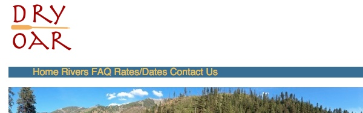
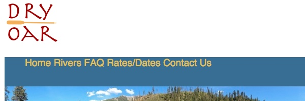
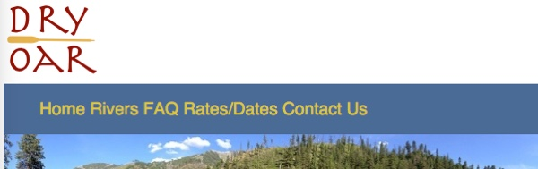

Layout the Home Page
Activity Instructions
Estimated Time: 45 minutes
This activity will use the following css concepts or properties (review the links if you do not remember these from Khan academy):
We have made a lot of improvements to our page over the last few weeks. This week we finally take on the layout. After we finish the layout of our page it should look very similar to the wireframe, and will be close to complete.
Review again the wireframe for the Dry Oar site. We will start from the top and work down to position all of the elements that need it. The header (logo and navigation) will take a bit of extra work, and few concepts that we will not learn until next week...so we are going to skip it for now.
Step 01
First lets consider the banner. According to the wireframe it should extend all the way across the width of the page. Depending on which image you are using your's may or may not be doing that. Lets set a width of 100% on that image. Make a class for the image called fullwidth and apply the style with that.
Step 02
Now lets position the first section of headline, paragraph and image.
You should have grouped elements together in previous weeks...the code for this section should look something like this:

Notice how each section has a leftcol and rightcol div. Last week you should have set a width on them as well to about 48%. Now all we need to do is get them to line up horizontally.
Let's try css flexbox to do this. Flexbox is good when we have several elements that we need aligned as a row or column. In fact it makes it really easy to switch from column to row and back. Flexbox relies on setting up a flex container or parent first. In our case the containers will be our rows which are made in the HTML with <section>s.
The link I provided above is to a great resource about flexbox from CSS-Tricks: A Complete Guide to Flexbox. You really should take a minute to look it over.
Add the following property display: flex;, to a rule in your css to modify the first 2 sections on your page to turn them into flex containers. In my case that rule would look like the following:
#section1, #section2 {
display: flex;
}
Now all of the immediate children will become flex-items or children. (Again in my case with the code above the flex-items would be the 2 divs, .rightcol and .leftcol)
You should see an immediate change once you make your first section flex. You should end up with something that looks like this:

Not bad for one line of css right? It automatically reformatted into a row. This is due to the default values for flex. They are set to row and nowrap. The row is perfect for what we are trying to do, but the nowrap could cause us problems.
Those defaults are set with the flex-flow property. Take a moment to review the values it can have.
The problem that nowrap will cause is best shown by shrinking the browser window as small as it will go. (Like if you were on a phone) The page ends up looking something like this:
Not great. It would be better if the 2 elements that make up our row wrapped and stretched back out to full width at a certain point.
Step 03
Begin fixing our small screen view by adding a flex-flow: row wrap; line just below the line that setup our flex container (display:flex;). This will allow our flex items to wrap, but it won't make them wrap. Flex items by nature are allowed to shrink and grow with the space they have available. This is controlled with the flex property.
Add flex: 1; to both the left and right divs in your section row. (In my case it would be .leftcol and .rightcol). This will let each of them take up 1 share of the space...so they will be the same size. Try changing one of them to 2. Now it should take up twice as much space as the other.
If your images are not resizing to fit in the box you have them in make sure you have the following rule in your css:
img {
max-width: 100%;
}
This will make sure that none of your images can ever be larger than the box they are in.
We need one last bit of css to fix our small screen view. Lets set a limit on how small the right and left columns can become. We can use the flex property for this. Above I showed you the simplest way to use flex. It can actually take 1, 2, or 3 values. Using 1 like we did above it basically means each flex item should have one share of the space, and let that space grow or shrink evenly as it needs to fill the available container. We could also do something like this flex: 1 0 15em; This would mean start with the item at 15em width, but let it grow to fill all available space (first 1). Don't let it shrink (middle 0) smaller than 15em though. Add that to your css. My css (for the html above) Is looking like this:
#section1, #section2 {
display:flex;
flex-flow: row wrap;
}
.leftcol {
width: 48%;
flex: 1 0 15em;
}
.rightcol {
width: 48%;
flex: 1 0 15em;
}
This should have fixed our small view. If you shrink your browser window again you should see something like this:
Much better!
Step 04
Looking good! One thing is bugging me though. The headline and paragraph in the first section is aligned at the top of that space...it would look much better closer to the center. This is another thing that flex excels at.
Alignment in flexbox is governed by two properties. align-items and justify-content.
When we set the flex-flow to row we were actually setting up the primary axis direction: row (or horizontal). This is significant because alignment along the primary axis is controlled with justify-content, alignment along the cross-axis is governed by align-items
Since our primary axis is row (horizontal), we change the cross-axis (vertical) alignment with align-items. Add the following to your css for the flex container: align-items: center;. Just like that our paragraphs will always be centered vertically...no matter how the width of the page changes!
Step 05
One last thing and our rows will be done. Sometimes the paragraphs and images are smushed together. Add some margin around them to make sure this doesn't happen.
I started with separate classes for my left and right columns (.leftcol and .rightcol). But as my css came together the properties and values I had under each ended up exactly the same.
.leftcol {
width: 48%;
flex: 1 0 15em;
margin: .5em;
}
.rightcol {
width: 48%;
flex: 1 0 15em;
margin: .5em;
}
It's good practice to review your css from time to time to watch for things like that. Since they are the same I could combine them like this:
.leftcol, .rightcol {
width: 48%;
flex: 1 0 15em;
margin: .5em;
}
Also watch for css rules that have the exact same selector. Those should be combined as well.
Step 06
We worked on the bottom (3rd) section a week or two ago to get it to center, and it should look pretty good by now. One thing though, it looks a bit squished. I think it would look better if it were closer in size to the other sections. Use margins, height, or padding to make it so.
Third section? you may ask...what happened to the second section? Well with mine since I used the same class names for the different parts of my rows (leftcol, rightcol) the second section just took care of itself! Anytime you have sections of your page that are styled or laid out similarly you should re-use your classes to avoid having to do the same things over and over.
Step 07
The last thing to do now is to finish the footer. According to the wireframe the copyright should be on the left, the social media icons on the right, the whole footer should be 55px high, and there should be space around the icons. This is similar to what we have done before. You should be able to figure it out.
Review the tips on last weeks positioning activity if you get stuck. (Hint: there are several ways to do this, you could use float, display:inline-block, or display: flex to do the major movement, then you will probably need to add some padding, margin, or width on the different elements in the footer to finish it off. If you use float remember that the floated element must come before the other stuff in the html.)
Navigation
We've done a lot of work on our site over the last few weeks and it's looking pretty close to that wireframe now. The final portion that needs our attention is the header. I have to admit I'll be really happy when we get that fixed up!
The code that I am basing this activity on looks like this: (you may want to adjust yours if it is not similar)

The top of my page looks like this:

Step 08
Let's make our links flow across the page horizontally first. It's important to remind ourselves why they currently look the way they do...list items are block elements. So one way to make them flow horiontally would be to change them to inline-block elements instead...but we also saw above that Flexbox can make columns reflow as rows...and we also gain some nifty alignment tools. Lets use that to layout our navigation. Remember that for flexbox we need to identify the items we want to move around (in this case the <li>), then find their parent (in this case the <ul>) The parent is where we will put our display:flex; Write a CSS rule using a selector to only affect the list that is inside of a nav element and add that now.
We learned about several new ways to select elements with CSS this week in Khan Academy. One of them allows us to combine multiple selectors together. For step 1 above we could use simple ul as our selector, but that would change all lists on the page, and we may not want that. It would be better to get only the lists that are inside of a nav. We can do that by using "nav ul" as our selector instead of just ul. Many of the steps of this activity will require similar selectors.

Page after Step 1
Step 09
The links are moving in the right direction now...but they don't stand out very well. It would be good to increase the size of both the font, and the box that the links are in to make them stand out. Increase the size of the links by adding to a rule selecting your nav, and adjust the height as well.
For my example site I wanted the navigation font to be a bit larger than normal...so I added font-size: 1.2em; to my nav rule.
Increasing the height is a little trickier. If you add something like height: 3em;, it will make the nav box 3X the size of the text...but it looks like this:

It increased the size of the box, but the font is top-aligned...not good. Luckily it is easy to fix. If we use the line-height property instead of height, the text will automatically center itself vertically in the space.

Page after Step 2
Step 10
The next thing we need to do is move the whole navigation bar up...so it is under the logo. While there are several ways to do this, the simplest would be to adjust the margin-top. Again this is affecting the whole navigation bar so we should apply that to the nav rule. You'll notice that as soon as we do this your Home link sits under the logo! Lets use padding-left to move it out.
You may notice that there is a small gap between the navigation bar and the image below it. This is because we placed our links in an unordered list and the default styling of lists is to have some margin on the top and bottom to space it out from things around it. In this case we don't want it...if you see it you can remove it by adding the following CSS: nav ul { margin: 0; } (Read that selector as "Find any unordered lists which are inside of nav elements and set their margin to 0)
Page after Step 3
We are getting closer, but we still have some issues with that logo. The image I provided has what is known as a transparent background...it lets colors underneath it show through. It's not working very well for us now. Notice above that I placed the image inside of a div. We can change the background color of that div to fix part of our issue.
You might also notice that the logo is slightly underneath the banner image below it. One way we could get that back on top would be to set position:relative. This pulls the element slightly out of the flow and lets us control how things layer.
Step 11
Make a new rule for the logo div (#logo) and set the background to white. Then add another line to that rule to change it's position to relative.
As soon as you changed the position to relative of that logo div you are probably wondering what happened to your nav bar. My page currently looks like this:
The div that we place the image in is a block element, and so it is taking the whole line up. We didn't notice it before because it was below the navbar. But when we brought it to the top it caused problems. We need to set a width on it to keep it from taking 100%
Step 12
Get your navbar back by setting a width on the logo. (If you are using my logo 110px will work well.) Lets finish our logo off by adding a border to keep it from blending into the white background above it.
Our page is looking great! Only a couple of last tasks left. First is to address a usability issue. You should never make a user guess about what elements are links and what aren't. We should give them plenty of visual hints.
One thing we can take advantage of is pseudo-classes. Click on that link and look at the examples there...go on...I'll wait.
Pseudo classes let us target specific states of elements, such as link. Links have 4 states: link (normal, nothing has happened), visited (link has been clicked on), active (link is currently being clicked), and hover (mouse is on link, but not clicking)
The way we would change a link on hover is to add a rule like this: a:hover { color: green; }. This would change the color of all links to green on hover.
Step 13
Lets set up some hover events to let our visitors know without a doubt that our navbar is indeed a navbar with clickable things. First lets increase the area of the link that will react to a hover, by default it is only the size of the words, I want a bigger box to hit. An easy way to do this is to add some padding to the links in our navbar (Hint: selector should be something like nav a). This will also have the affect of spreading out our links...they are currently a bit squished together. If you made your line-height 3em like I did above then I would try something like: padding: 1em .6em

Page after Step 6
Step 14
Now lets add those hover events. Add another rule to your CSS that looks like nav a:hover{ }. This will only be active when the mouse is on the links in our navbar. Change something about your link in that rule.
There are a couple of common things that can happen when you mouse over a link. You could do something very simple and just add (or remove) an underline on hover (text-decoration: none). You could also change the color of the link text, or change the color of link and background. For mine I think I will change both foreground and background color...in fact I think I will swap them. Try a few different effects, just remember the purpose: to make sure the visitor knows what are links and what aren't.
Notice!
Most of the time CSS doesn't care much about spaces. You can have them or not. Sometimes it does care though and pseudo-classes are one of them. nav a:hover will work just fine... nav a: hover will not.Make sure to not add spaces around the : on your pseudo-selector.
Step 15
Enter the view URL to your site into a browser to make sure the webpage displays correctly. Once verified, submit the URL for this assignment in ILearn. Remember that the URL should look like: http://projectname.glitch.com
Grading
This activity will be graded using the following rubric:
- Positioning of elements looks like that in the wireframe (10 pts)
- Navigation links are interactive (change on hover) (5 pt)
- The HTML is well formed and without errors and the page is visually appealing. (5 pts)